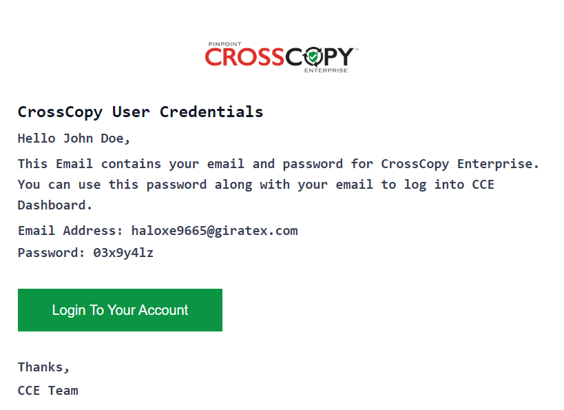

To view and manage your CCE Users, you will need to go to the User Management page. To access the User Management page, click on the User Management option from the navigation bar on the left-hand side.

You will see a similar screen.
To create a new user, click on the Create New User button.

Fill in the required fields and click on the Create User button.

A new user will be created and you will be able to view their details on the User Management page.

The user will receive a notification via email containing their login details:
Click on the pencil icon next to the user to edit their details.

A popup will appear where you can edit the details of the user. Once you are satisfied with the information, click on the Save Changes button.
Click on the mail icon next to the user to resend a notification containing their login details.

You will be prompted to confirm the resending of the notification.
Click on the bin icon next to the user to delete that user.
You will be prompted to confirm the deletion of the user.

Click on the Delete button to delete the user. Now, you will no longer be able to see the user in User Management.